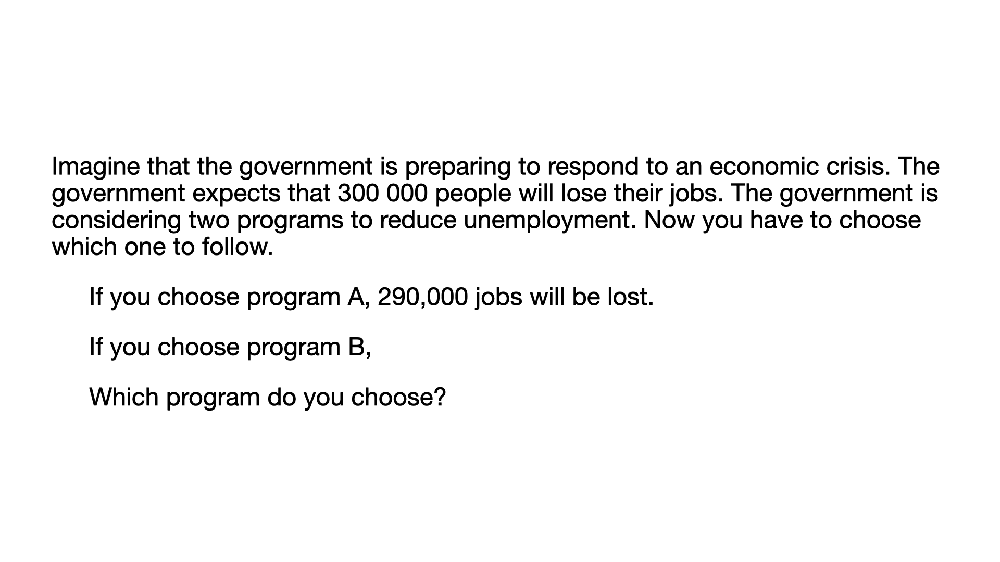
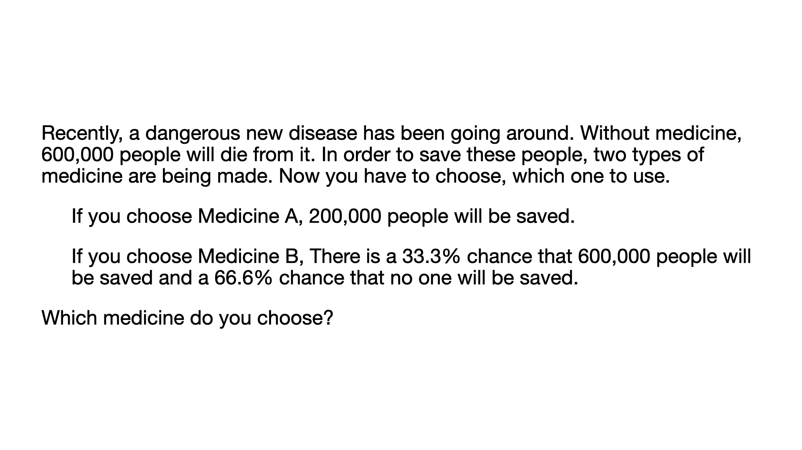
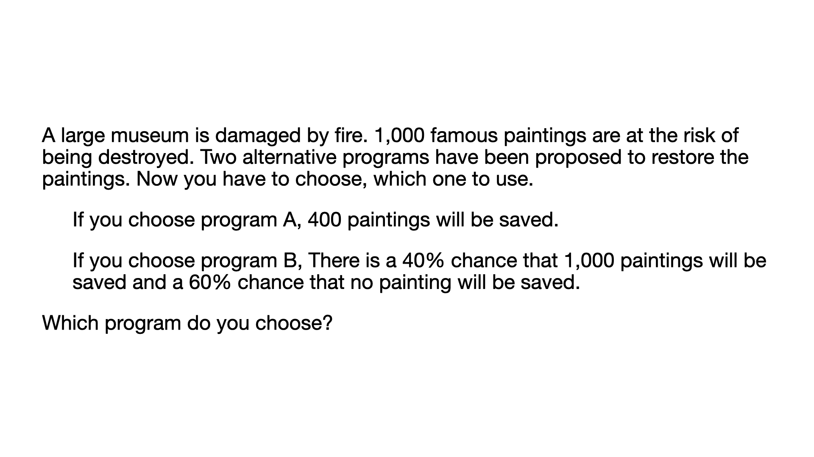
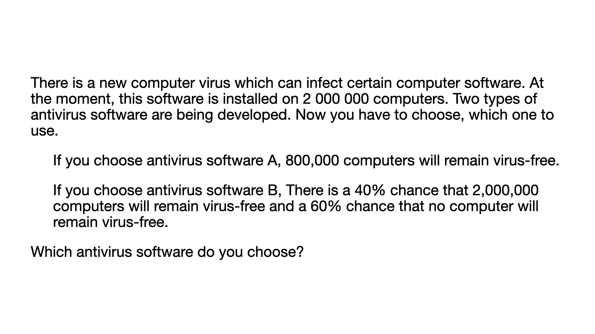
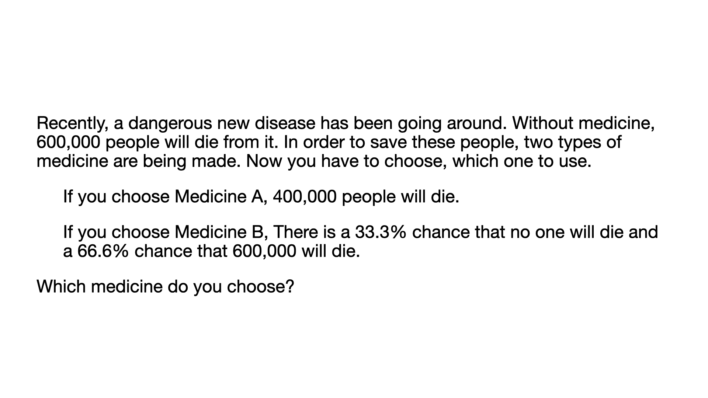
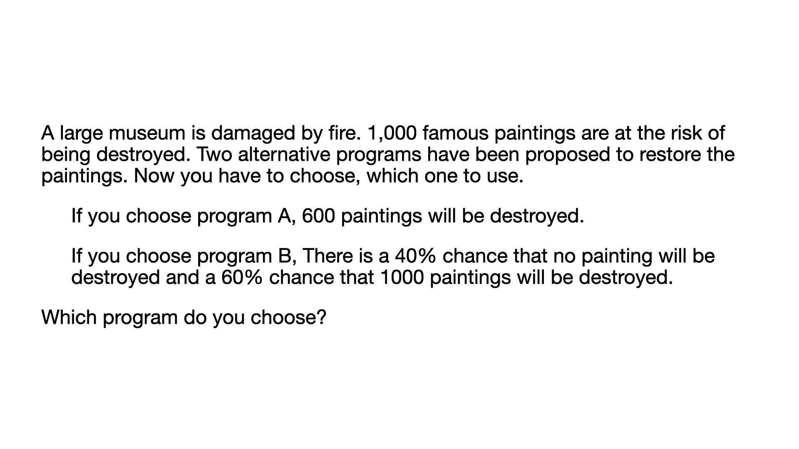
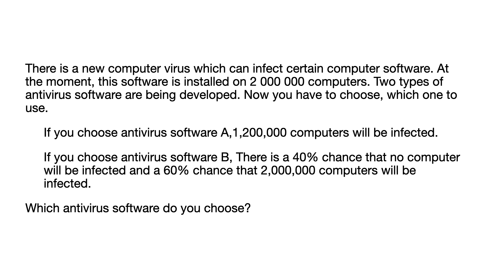

<!DOCTYPE html>
<html>
    <head>
        <title>Main Experiment</title>
        <script src="https://unpkg.com/jspsych@7.3.4"></script>
        <script src="https://unpkg.com/@jspsych/plugin-survey-likert@1.1.3"></script>
        <script src="https://unpkg.com/@jspsych/plugin-survey-multi-choice@2.0.0"></script>
        <script src="https://unpkg.com/@jspsych/plugin-instructions@1.1.4"></script>
        <script src="https://unpkg.com/@jspsych/plugin-html-keyboard-response@1.1.3"></script>
        <script src="https://unpkg.com/@jspsych/plugin-html-button-response@1.2.0"></script>
        <script src="https://unpkg.com/@jspsych/plugin-image-button-response@2.0.0"></script>
        <script src="https://unpkg.com/@jspsych/plugin-survey-html-form@1.0.3"></script>
        <link href="https://unpkg.com/jspsych@7.3.4/css/jspsych.css" rel="stylesheet" type="text/css" />
    </head>
    <body></body>
    <script>
        // Initialize jsPsych
        const jsPsych = initJsPsych({
            on_finish: function() {
                jsPsych.data.displayData();
            }
        });
        var timeline = [];

        /**  Preload task images  */
        const styleSetup = "style='width:1000px; height:auto; display:block; margin-left:auto; margin-right:auto;'";
        const all_stimuli = [
            {frame: "loss", type: "practice", question: ``,},
            {frame: "gain", type: "practice", question: ``,},
            {frame: "gain", type: "formal", question: ``,},
            {frame: "gain", type: "formal", question: ``,},
            {frame: "gain", type: "formal", question: ``,},
            {frame: "loss", type: "formal", question: ``,},
            {frame: "loss", type: "formal", question: ``,},
            {frame: "loss", type: "formal", question: ``,},
        ];

        /**  Welcome  */
        var welcome = {
            data: {
                screen_id: "welcome"
            },
            type: jsPsychHtmlButtonResponse,
            stimulus: '<h1>Welcome to our hypothetical decision-making experiment.</h1><p><br>Please use Chrome, Firefox, Safari or Edge, and make sure that your Internet connection is stable.</p>',
            choices: ["Click here to continue"]
        };

        timeline.push(welcome);

        var consent = {
            data: {
                screen_id: "consent-form"
            },
            type: jsPsychHtmlButtonResponse,
            stimulus: `
            <h1>Consent Form</h1>
            <p style="text-align: left;">
            You are invited to participate in a research study on decision making. Before you decide whether to participate, it is important for you to understand the purpose of the study, what will be asked 
            of you, and any potential risks or benefits associated with your participation. 
            <br><br>
        
            <strong>Purpose of the Study:</strong><br>
            The purpose of this study is to investigate partterns in decision-making, which may contribute to a better understanding of the decision-making process.
            <br><br> 
        
            <strong>Procedures:</strong><br>
            If you agree to participate in this study, you will be asked to complete an online task and answer some questions. The estimated time to complete the whole procedure is less than 10 minutes. 
            Your responses will be anonymous and confidential, and no personally identifiable information will be collected.
            <br><br> 
        
            <strong>Benefits and Risks:</strong><br>
            There may not be any direct benefits to you for participating in this study. However, your participation will contribute to the advancement of knowledge in the field of social learning. 
            There are minimal anticipated risks associated with participating in this study. However, if you feel uncomfortable answering any question or if you experience any emotional distress during the study, 
            you are free to withdraw at any time without negative consequences.
            <br><br> 
        
            <strong>Confidentiality:</strong><br>
            All data collected during this study will be treated with strict confidentiality. Your responses will be stored securely and analyzed in aggregate form. No personally identifiable information will be linked 
            to your responses. Any information that could potentially identify you will be removed or anonymized.
            <br><br> 
        
            <strong>Voluntary Participation:</strong><br>
            Participation in this study is completely voluntary. If you decide to participate, you are free to withdraw at any time without providing a reason. Your decision to participate or withdraw will be respected and will have no negative consequences.
            <br><br>
            Further information in details about the consent information can be found by following this link:  
            <a target="_blank" href="http://www.dnhi-lab.org/ethics_online_en">consent information</a>.
        
            <br><br> 
        
            <strong>By clicking the following button and continuing with the study, you confirm that you have read and understood the information provided in this consent form. You freely and voluntarily agree to participate in this study.</strong>
            </p>`,

            choices: ["I agree to participate in this study."],
            css_classes: ['consent_style'],
            on_finish: function (data) {
                data.time_consent_end = new Date();
            },
        };
        timeline.push(consent);

        /* Instruction */
        const page = `
            <div style="display: flex; flex-direction: column; justify-content: center; align-items: center; height: calc(60vh - 60px); text-align: center;">
                <strong style="font-size: 40px;">Instruction</strong>
                <p style="text-align: left;">
                    In this experiment, you will read a few texts and make decisions based on each context. You will be presented with <b>three</b> options for each task.</p>
                <p style="text-align: left;">
                    Two options are specified, and a <b>third option</b> allows you to <b>flip a coin</b> if you're <b>undecided</b>. Selecting the coin flip gives you a <b>50% chance</b> of taking either the first or second option.
                </p>
            </div>
        `;

        var instructions = {
            data: {
                screen_id: "instruction"
            },
            type: jsPsychInstructions,
            pages: [page],
            button_label_next: "Continue",
            show_clickable_nav: true,
            css_classes: ['instruction_style'],
            on_finish: function (data) {
                data.time_instruction_end = new Date();
            }
        }

        timeline.push(instructions);

        /**  Setup Task  */
        // Coin flip to select gain or loss frames
        var selected_frame = Math.random() > 0.5 ? "loss" : "gain";

        // Fixation 
        var fixation = {
          type: jsPsychHtmlKeyboardResponse,
          stimulus: '<div style="font-size:50px;">+</div>',
          choices: "NO_KEYS",
          trial_duration: 1000,
        };
        
        // Test
        var test = {
          type: jsPsychSurveyMultiChoice,
          questions: [
            {
              prompt: jsPsych.timelineVariable('question'),  // Use the question from timeline variables
              options: ['A', 'B', 'C: Flip coin'], 
              required: true,
              horizontal: true
            }, 
          ],
      };

        /** ---------------------  Practice ------------------------------ */
        // Practice Stimuli
        const practice_stimuli = all_stimuli.filter(stimulus => stimulus.frame === selected_frame && stimulus.type === "practice");

        // ready to start 
        var practice_start = {
          data: {
              screen_id: "practice-start"
          },
          type: jsPsychHtmlButtonResponse,
          stimulus: `<p style="font-size: 32px"> 
            Practice <br><br><br>
            You will first start with the practice session so that you could get familar with the task.<br><br>
            If you are ready, please click "Continue" to start.</p>`,
          choices: ["Continue"]
        };
        timeline.push(practice_start);

        // Practice test
        var practice_procedure = {
            timeline: [fixation, test],
            timeline_variables: practice_stimuli
          };
          timeline.push(practice_procedure);

        /** ---------------------  Formal ------------------------------ */
        const test_stimuli = all_stimuli.filter(stimulus => stimulus.frame === selected_frame && stimulus.type === "formal");

        var formal_start = {
            data: {
                screen_id: "formal-start"
            },
            type: jsPsychHtmlButtonResponse,
            stimulus: `<p style="font-size: 32px"> Great! You have finished the practice session.<br><br>
              Next, you will start with the actual task.<br><br>
              If you are ready, please click "Continue" to start.</p>`,
            choices: ["Continue"]
          };
          timeline.push(formal_start);

        /* Define test procedure */
        var test_procedure = {
            timeline: [fixation, test],
            timeline_variables: test_stimuli
          };
          timeline.push(test_procedure);
          

        //** Post survery
        //Survey prompt
        const survey_prompt = 'Great! You have finished the task. Please take a moment to answer some questions about the task you just completed.<br><br>';
        timeline.push({
            type: jsPsychHtmlButtonResponse,
            stimulus: survey_prompt,
            choices: ['Continue']
        });

        // Define Likert scale
        var likert_scale = [
            "1<br>Strongly Disagree", 
            "2", 
            "3", 
            "4", 
            "5<br>Strongly Agree"
        ];

        // Define the survey trials
        var survey_trial = {
            data: {
              screen_id: "post-survey"
          },
              type: jsPsychSurveyLikert,
              preamble: `<h2>Survey</h2>
                <p>Please indicate your level of agreement with each statement.</p>`,
              questions: [
                  {prompt: "I think these questions do not matter to me.", name: 'Indifference', labels: likert_scale},
                  {prompt: "I feel that it is not my responsibility to make a choice in these situations.", name: 'Responsibility', labels: likert_scale},
                  {prompt: "I think I would need more information to make my decisions.", name: 'InformationSeeking', labels: likert_scale},
                  ],
          };

        timeline.push(survey_trial)

        /** Demographic */
        var demographicQuestions = {
            data: {
                screen_id: "demographic-questions"
            },
            type: jsPsychSurveyHtmlForm,
            html: `
                <style>
                    .question-container {
                        display: flex;
                        flex-direction: column;
                        margin-bottom: 20px;
                    }
                    .question-label {
                        font-weight: bold;
                        margin-bottom: 5px;
                    }
                    .options-container {
                        display: flex;
                        flex-direction: column;
                        gap: 5px;
                    }
                    .radio-group, .dropdown-group {
                        display: flex;
                        flex-direction: column;
                    }
                    input[type="number"], input[type="text"], select {
                        width: 100%;
                        padding: 5px;
                        font-size: 14px;
                    }
                    label {
                        font-size: 14px;
                        line-height: 1.5;
                    }
                </style>
        
                <div class="question-container">
                    <div class="question-label">Please answer the following demographic questions:</div>
                </div>
        
                <div class="question-container">
                    <div class="question-label">What year were you born?</div>
                    <input name="age" type="number" required>
                </div>
                
                <div class="question-container">
                    <div class="question-label">What is your gender identity?</div>
                    <div class="radio-group options-container">
                        <label><input type="radio" name="gender" value="Female" required> Female</label>
                        <label><input type="radio" name="gender" value="Male"> Male</label>
                        <label><input type="radio" name="gender" value="Non-conforming"> Non-conforming</label>
                        <label><input type="radio" name="gender" value="Prefer not to respond"> Prefer not to respond</label>
                    </div>
                </div>
                
                <div class="question-container">
                    <div class="question-label">Are you a native English speaker?</div>
                    <div class="radio-group options-container">
                        <label><input type="radio" name="language" value="Yes" required> Yes</label>
                        <label><input type="radio" name="language" value="No"> No</label>
                    </div>
                </div>
                
                <div class="question-container">
                    <div class="question-label">What is your nationality?</div>
                    <input name="nationality" type="text" required>
                </div>
                
                <div class="question-container">
                    <div class="question-label">What is the highest level of education you have completed?</div>
                    <select name="education" required>
                        <option value="">Select an option</option>
                        <option value="Some high school">Some high school</option>
                        <option value="High school">High school</option>
                        <option value="Bachelor's degree">Bachelor's degree</option>
                        <option value="Master's Degree">Master's Degree</option>
                        <option value="Ph.D. or higher">Ph.D. or higher</option>
                    </select>
                </div>
            `,
            css_classes: ['question_style'],
            on_finish: function (data) {
                data.time_demoQ_end = new Date();
            },
        };
      
      timeline.push(demographicQuestions);
      
      


        // Run the experiment
        jsPsych.run(timeline);
    </script>
</html>